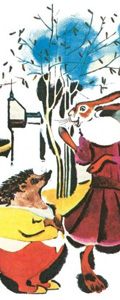

The hare and the hedgehog

This story, my dear young folks, seems to be false, but it really is true,
for my grandfather, from whom I have it, used always, when relating it,
to say complacently, "It must be true, my son, or else no one could tell it to you.
" The story is as follows. One Sunday morning about harvest time,
just as the buckwheat was in bloom,
the sun was shining brightly in heaven,
the east wind was blowing warmly over the stubble-fields,
the larks were singing in the air, the bees buzzing among the buckwheat,
the people were all going in their Sunday clothes to church,
and all creatures were happy, and the hedgehog was happy too.
The hedgehog, however, was standing by his door with his arms akimbo,
enjoying the morning breezes, and slowly trilling a little song to himself,
which was neither better nor worse than the songs
which hedgehogs are in the habit of singing on a blessed Sunday morning.
Whilst he was thus singing half aloud to himself,
it suddenly occurred to him that,
while his wife was washing and drying the children,
he might very well take a walk into the field,
and see how his turnips were going on. The turnips were, in fact,
close beside his house, and he and his family were accustomed to eat them,
for which reason he looked upon them as his own. No sooner said than done.
The hedgehog shut the house-door behind him, and took the path to the field.
He had not gone very far from home,
and was just turning round the sloe-bush which stands there outside the field,
to go up into the turnip-field,
when he observed the hare who had gone out on business of the same kind,
namely, to visit his cabbages. When the hedgehog caught sight of the hare,
he bade him a friendly good morning. But the hare,
who was in his own way a distinguished gentleman,
and frightfully haughty, did not return the hedgehog's greeting,
but said to him, assuming at the same time a very contemptuous manner,
"How do you happen to be running about here in the field so early in the morning?
" - "I am taking a walk," said the hedgehog. "A walk!" said the hare, with a smile.
"It seems to me that you might use your legs for a better purpose."
This answer made the hedgehog furiously angry,
for he can bear anything but an attack on his legs,
just because they are crooked by nature. So now the hedgehog said to the hare,
"You seem to imagine that you can do more with your legs than I with mine.
" - "That is just what I do think," said the hare. "That can be put to the test,"
said the hedgehog. "I wager that if we run a race, I will outstrip you.
" - "That is ridiculous! You with your short legs!" said the hare,
"but for my part I am willing, if you have such a monstrous fancy for it.
What shall we wager?" - "A golden louis-d'or and a bottle of brandy,
" said the hedgehog. "Done," said the hare. "Shake hands on it,
and then we may as well come off at once." - "Nay," said the hedgehog,
"there is no such great hurry! I am still fasting, I will go home first,
and have a little breakfast. In half-an-hour I will be back again at this place."
Hereupon the hedgehog departed, for the hare was quite satisfied with this.
On his way the hedgehog thought to himself, "The hare relies on his long legs,
but I will contrive to get the better of him. He may be a great man,
but he is a very silly fellow, and he shall pay for what he has said.
" So when the hedgehog reached home, he said to his wife,
"Wife, dress thyself quickly, thou must go out to the field with me.
" - "What is going on, then?" said his wife.
"I have made a wager with the hare,
for a gold louis-d'or and a bottle of brandy.
I am to run a race with him, and thou must be present.
" - "Good heavens, husband," the wife now cried,
"art thou not right in thy mind,
hast thou completely lost thy wits? What can make thee
want to run a race with the hare?" - "Hold thy tongue,
woman," said the hedgehog, "that is my affair.
Don't begin to discuss things which are matters for men.
Be off, dress thyself, and come with me.
" What could the hedgehog's wife do? She was forced to obey him,
whether she liked it or not.
So when they had set out on their way together, the hedgehog said to his wife,
"Now pay attention to what I am going to say. Look you,
I will make the long field our race-course. The hare shall run in one furrow,
and I in another, and we will begin to run from the top.
Now all that thou hast to do is to place thyself here below in the furrow,
and when the hare arrives at the end of the furrow, on the other side of thee,
thou must cry out to him, 'I am here already!'"
Then they reached the field, and the hedgehog showed his wife her place,
and then walked up the field. When he reached the top, the hare was already there.
"Shall we start?" said the hare. "Certainly," said the hedgehog. "Then both at once.
" So saying, each placed himself in his own furrow. The hare counted, "Once, twice,
thrice, and away!" and went off like a whirlwind down the field. The hedgehog,
however, only ran about three paces, and then he stooped down in the furrow,
and stayed quietly where he was. When the hare therefore arrived in full career at the lower
end of the field, the hedgehog's wife met him with the cry, "I am here already!"
The hare was shocked and wondered not a little, he thought no other
than that it was the hedgehog himself who was calling to him,
for the hedgehog's wife looked just like her husband. The hare, however,
thought to himself, "That has not been done fairly," and cried,
"It must be run again, let us have it again.
" And once more he went off like the wind in a storm, so that he seemed to fly.
But the hedgehog's wife stayed quietly in her place.
So when the hare reached the top of the field,
the hedgehog himself cried out to him, "I am here already."
The hare, however, quite beside himself with anger, cried,
"It must be run again, we must have it again." - "All right,"
answered the hedgehog, "for my part we'll run as often as you choose."
So the hare ran seventy-three times more,
and the hedgehog always held out against him,
and every time the hare reached either the top or the bottom,
either the hedgehog or his wife said, "I am here already."
At the seventy-fourth time, however, the hare could no longer reach the end.
In the middle of the field he fell to the ground, blood streamed out of his mouth,
and he lay dead on the spot.
But the hedgehog took the louis-d'or which he had won and the bottle of brandy,
called his wife out of the furrow, and both went home together in great delight,
and if they are not dead, they are living there still.
This is how it happened that the hedgehog made the hare run races with him
on the Buxtehuder heath till he died, and since that time no
hare has ever had any fancy for running races with a Buxtehuder hedgehog.
The moral of this story, however, is, firstly, that no one,
however great he may be, should permit himself to jest at any one beneath him,
even if he be only a hedgehog. And, secondly, it teaches, that when a man marries,
he should take a wife in his own position, who looks just as he himself looks.
So whosoever is a hedgehog let him see to it that his wife is a hedgehog also,
and so forth.